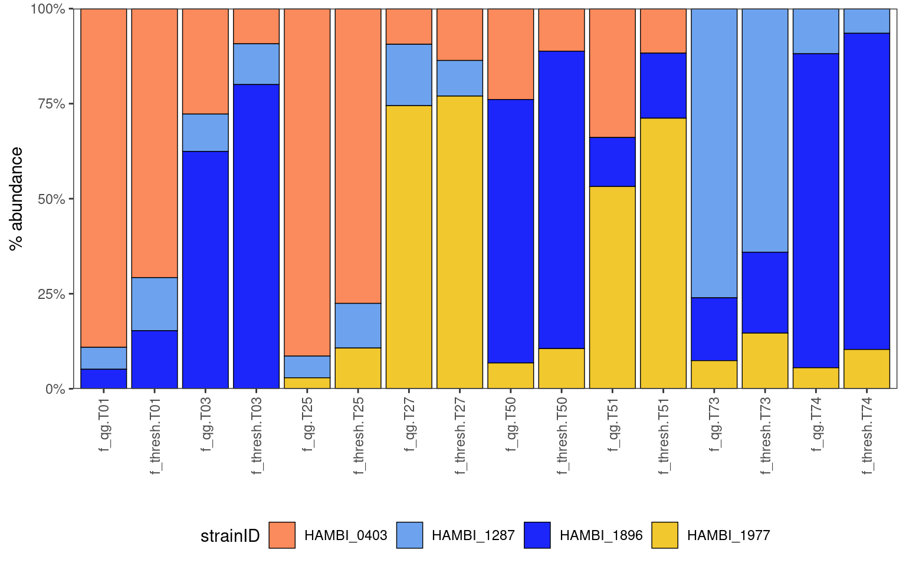
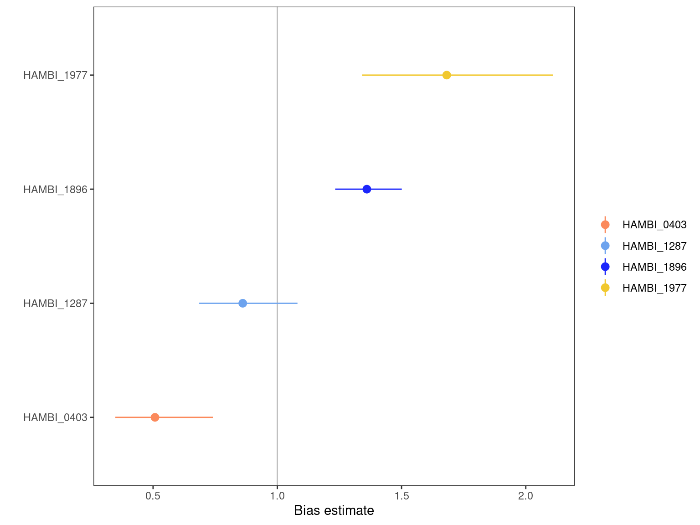
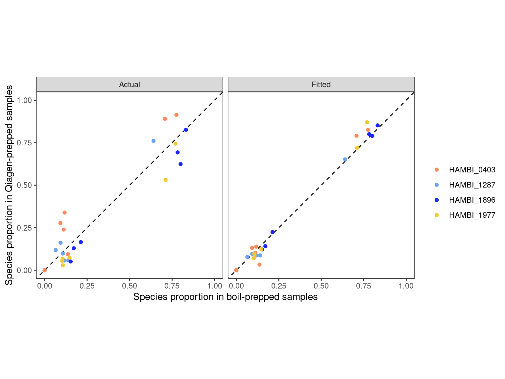

Calibrate boilprep to Qiagen DNeasy
Abstract
We will use the metacal package for estimating bias and performing calibration in the special case where the bias of all the taxa of interest can be directly measured from the control sample. Since samples extracted by Qiagen and by boil are exactly the same we can estimate scaling factors to produce corrected relative abundance for other samples. Publication: Consistent and correctable bias in metagenomic sequencing experiments
1 Setup
1.1 Libraries
1.2 Global variables
2 Read data
Show/hide code
pos_ctrl <- read_tsv(here::here(data, "pos_neg_ctrl_counts.tsv"))
samp_pairs <- read_tsv(here::here(data, "pairs_counts.tsv"))
samp_trios <- read_tsv(here::here(data, "trios_counts.tsv"))
# metadata
mddf <- readr::read_tsv(here::here(data_raw, "20240711_BTK_illumina_v3_metadata.tsv"))
spdf <- readr::read_tsv(here::here(data_raw, "sample_compositions.tsv"))3 Formatting
3.1 Format positive control samples
Show/hide code
pos_ctrl <- left_join(pos_ctrl, spdf) %>%
filter(str_detect(community_type, "^pos")) %>%
# remove noise from species that aren't really there
filter(!is.na(evo_hist)) %>%
group_by(sample) %>%
mutate(f_qg = count_correct/sum(count_correct)) %>%
dplyr::select(sample, strainID, community_id, count_correct, f_qg) %>%
ungroup()Joining with `by = join_by(strainID, community_id)`3.2 Plot masterplate Qiagen and boil-prep side by side
Show/hide code
left_join(samp_trios, mddf,
by = join_by(sample, replicate, strep_conc, transfers, n_species, community_type, plate_well)) %>%
filter(community_type == "masterplate") %>%
right_join(pos_ctrl, by = join_by(strainID, community_id)) %>%
dplyr::select(community_id, strainID, f_thresh, f_qg) %>%
pivot_longer(c(f_thresh, f_qg)) %>%
ggplot() +
geom_bar(aes(y = value, x=interaction(name, community_id), fill = strainID),
color="black",
linewidth=0.25, stat="identity") +
scale_y_continuous(limits = c(0,1), expand = c(0, 0), labels = percent) +
scale_x_discrete(guide = guide_axis(angle = 90)) +
labs(x="", y="% abundance") +
theme_bw() +
theme(panel.grid = element_blank(),
legend.position = "bottom") +
scale_fill_manual(values = hambi_colors)
3.3 Matrix of observed counts
Show/hide code
samp_trios_counts <- left_join(samp_trios, mddf,
by = join_by(sample, replicate, strep_conc,
transfers, n_species, community_type, plate_well)) %>%
filter(community_type == "masterplate") %>%
filter(community_id %in% pull(pos_ctrl, community_id)) %>%
dplyr::select(community_id, strainID, count_correct_thresh) %>%
pivot_wider(names_from="strainID", values_from="count_correct_thresh") %>%
column_to_rownames(var="community_id") %>%
mutate(across(everything(), ~replace_na(.x, 0))) %>%
as.matrix()3.4 Make a matrix of true proportions
4 Metacal procedure
4.1 Estimate bias
4.1.1 Plot bias estimation
Show/hide code
mc_fit_trios_summary_coef %>%
mutate(taxon = fct_reorder(taxon, estimate)) |>
ggplot(aes(taxon, estimate,
ymin = estimate / gm_se^2, ymax = estimate * gm_se^2)) +
geom_hline(yintercept = 1, color = "grey") +
geom_pointrange(aes(color = taxon)) +
scale_color_manual(values = hambi_colors) +
labs(x = "", y = "Bias estimate", color = "") +
coord_flip() +
theme_bw() +
theme(panel.grid.major = element_blank(),
panel.grid.minor = element_blank())
4.1.2 Plot metacal model fit
Show/hide code
a <- as.data.frame(fitted(mc_fit_trios)) %>%
rownames_to_column(var = "sample") %>%
pivot_longer(-sample) %>%
mutate(type="Fitted")
b <- as.data.frame(pos_ctrl_proportions) %>%
rownames_to_column(var = "sample") %>%
pivot_longer(-sample) %>%
mutate(type="Actual")
c <- as.data.frame(samp_trios_counts/rowSums(samp_trios_counts)) %>%
rownames_to_column(var = "sample") %>%
pivot_longer(-sample, values_to="observed")Show/hide code
bind_rows(a,b) %>%
left_join(c, by = join_by(sample, name)) %>%
ggplot(aes(x=observed, y=value, color = name)) +
geom_abline(linetype = "dashed") +
geom_point() +
scale_color_manual(values = hambi_colors) +
labs(x = "Species proportion in boil-prepped samples", y = "Species proportion in Qiagen-prepped samples", color = "") +
facet_grid(~type) +
coord_fixed(xlim = c(0, 1), ylim = c(0, 1)) +
theme_bw() +
theme(panel.grid.major = element_blank(),
panel.grid.minor = element_blank())
4.2 Calibrate
Make a matrix of observed counts
Show/hide code
trios_2_cal <- left_join(samp_trios, mddf,
by = join_by(sample, replicate, strep_conc, transfers, n_species, community_type, plate_well)) %>%
dplyr::select(sample, strainID, count_correct_thresh) %>%
pivot_wider(names_from="strainID", values_from="count_correct_thresh") %>%
column_to_rownames(var="sample") %>%
mutate(across(everything(), ~replace_na(.x, 0))) %>%
as.matrix()
pairs_2_cal <- left_join(samp_pairs, mddf,
by = join_by(sample, replicate, strep_conc, transfers, n_species, community_type, plate_well)) %>%
dplyr::select(sample, strainID, count_correct_thresh) %>%
pivot_wider(names_from="strainID", values_from="count_correct_thresh") %>%
column_to_rownames(var="sample") %>%
mutate(across(everything(), ~replace_na(.x, 0))) %>%
as.matrix()4.3 Run the calibrate function
Show/hide code
pairs_calibrated_l <- data.frame(pairs_calibrated) %>%
rownames_to_column(var = "sample") %>%
pivot_longer(-sample, names_to = "strainID", values_to = "f_metacal") %>%
filter(f_metacal > 0)
trios_calibrated_l <- data.frame(trios_calibrated) %>%
rownames_to_column(var = "sample") %>%
pivot_longer(-sample, names_to = "strainID", values_to = "f_metacal") %>%
filter(f_metacal > 0)5 Export
Save metacal estimates for later use